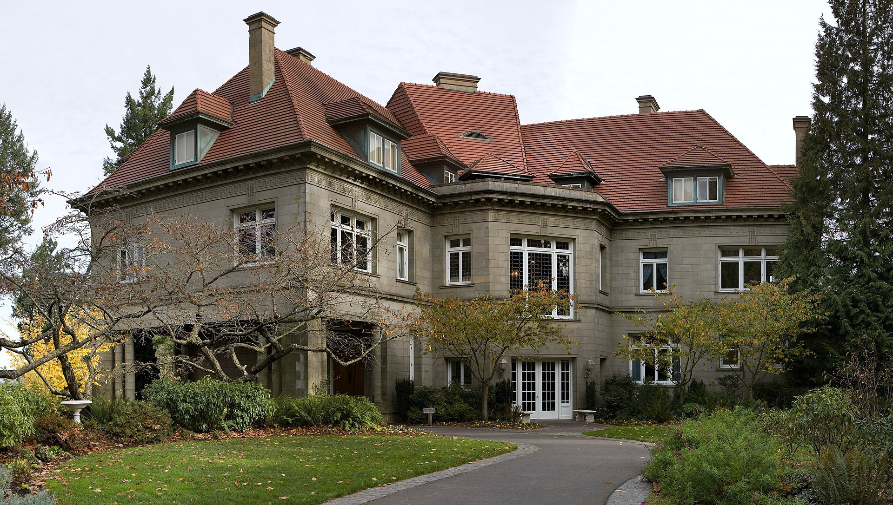

OMSI Museum

The Oregon Museum of Science and Industry is a science and technology museum in Portland, Oregon, United States. It contains three auditoriums, including a large-screen theatre, planetarium, and exhibition halls with a variety of hands-on permanent exhibits focused on natural sciences, industry, and technology
The Pittock Mansion

The Pittock Mansion is a French Renaissance-style château in the West Hills of Portland, Oregon, United States. The mansion was originally built in 1914 as a private home for London-born Oregonian publisher Henry Pittock and his wife, Georgiana Burton Pittock.
The Rose Gardens

There are over 10,000 rose bushes of approximately 650 varieties. It is the oldest continuously operating public rose test garden in the United States and exemplifies Portland's nickname, "City of Roses". The garden draws an estimated 700,000 visitors annually.